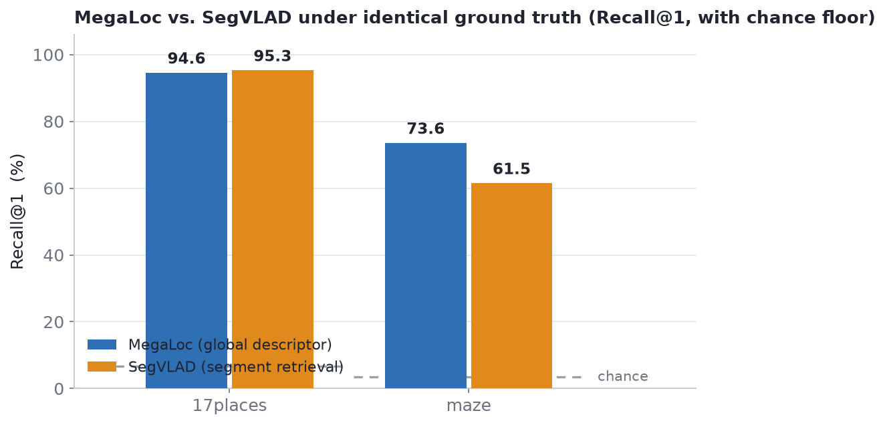
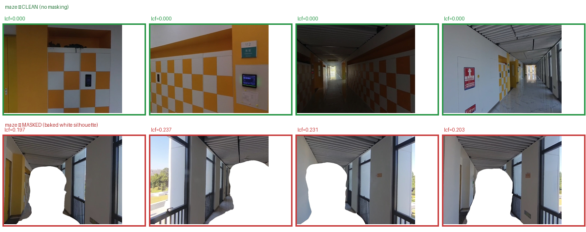

Indoor visual place recognition (VPR) is evaluated by retrieving database images taken near a query, where “near” is defined by a horizontal-distance ground truth. We reproduce a recent state-of-the-art global descriptor, MegaLoc, on the standard Baidu-Mall benchmark, and use the same evaluation path to measure its behaviour across several indoor datasets (17places, maze, Baidu), comparing it against the segment-retrieval method SegVLAD under identical ground truth. Alongside every recall we report a shuffled-retriever floor, and we characterise how both recall and this floor vary with the ground-truth radius and the size of the retrieval database. We additionally quantify the prevalence of privacy-anonymisation artifacts in one indoor benchmark. The study is a measurement effort — its aim is to make indoor VPR numbers interpretable, not to rank methods.
Using the released model at its stated 322×322 inference resolution and the benchmark’s stated 25 m ground-truth radius, MegaLoc’s published Baidu result is reproduced to within 0.1 point on the VPR-benchmark version of the dataset (5,207 database / 3,208 query images) — with no parameter tuning.
| Baidu-Mall (5,207 / 3,208) | Recall@1 | Recall@10 |
|---|---|---|
| Paper (Table 1) | 87.7 | 98.0 |
| Ours — stated 25 m, no tuning | 87.75 | 97.97 |
The same pipeline, run on three indoor datasets at each dataset’s own ground-truth protocol. MegaLoc (a global descriptor) and SegVLAD (segment retrieval) are scored under identical ground truth, and each Recall@1 is read beside a shuffled-retriever floor (10 seeds).
| Dataset | DB size | GT protocol | MegaLoc R@1 | SegVLAD R@1 | Shuffled floor R@1 |
|---|---|---|---|---|---|
| Baidu (VPR-benchmark) | 5,207 | 25 m | 87.75 | — | 5.4 |
| 17places | 406 | index window (±15) | 94.58 | 95.30 | 6.7 |
| maze-with-text | 8,540 | 10 m (per floor) | 73.56 | 61.50 | 3.4 |
The shuffled floor is method-independent — it depends only on the ground truth and the database — so one column serves both methods, and it keeps recall comparable across datasets whose protocols and sizes differ. SegVLAD (exp0, pretrained, domain vocabulary) was not run on the VPR-benchmark Baidu build (—). Recall@10 is a weak discriminator on the smaller sets, so we lead with Recall@1.

Both recall and the shuffled-retriever floor increase with the ground-truth radius. On a small database the floor rises much faster: at 25 m a random retriever already scores 17% Recall@1 on the 689-image Baidu subset, versus 5% on the 5,207-image version. Reading recall beside this floor — and taking the radius from the benchmark’s stated protocol rather than tuning it — keeps the numbers interpretable.
The maze-with-text benchmark anonymises people as baked-in white silhouettes. A connected-component detector over all 9,845 images finds the artifact in ~23% of both reference and query images (23.3% / 22.8% at the bimodal-valley threshold). The artifact sits on both sides of retrieval, so it is a property of the corpus rather than of any one method.

@misc{jain2026indoorvpr,
title = {Auditing Indoor Visual Place Recognition: Reproductions, Ground-Truth Protocols, and Evaluation Artifacts},
author = {Jain, Harshita and Author, Two and Advisor, Name},
year = {2026},
note = {Work in progress},
url = {REPLACE_WITH_PAGE_URL}
}